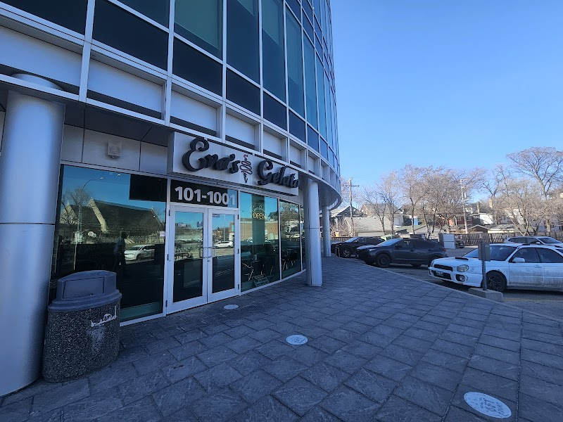

Sweet tooth crawl: bakeries, gelato, and dessert on Corydon

Corydon Avenue's reputation is built on its Italian restaurants, but the strip has just as strong a lineup for dessert. Whether you want a scoop after dinner or a slice of cake to bring home, here's where to find it within a short walk of the Corydon/Crescentwood Airbnb.
Nucci's Gelati
Nucci's Gelati at 643 Corydon Ave is one of the strip's longest-running gelato stops, right at the Osborne end of Little Italy. It's open daily, roughly 11am to 11pm on weekdays and noon to 11pm on weekends, though hours can shift with the weather since much of the appeal is the walk-up window and patio seating.
Eva's Gelato & Coffee Bar
Eva's Gelato & Coffee Bar at 1001 Corydon Ave makes its Argentinean-style gelato in-house at this location, so flavours can vary by day. It doubles as a cappuccino bar, making it an easy stop for a coffee-and-gelato pairing at the Cambridge end of the strip.
Sugar + Salt Bakeshoppe
Sugar + Salt Bakeshoppe at 897 Corydon Ave is a custom cake shop and bakery with homestyle bakes — think cookies, squares, and daily pastry cases alongside made-to-order cakes. It keeps shorter hours than the restaurants nearby, roughly Tuesday to Friday late morning through mid-afternoon and Saturday mornings, so it's best treated as a daytime stop rather than an after-dinner one.
Good to know: All three stops are on Corydon Avenue itself, an easy walk from the Corydon/Crescentwood Airbnb. Bakery and gelato hours here tend to be shorter and more seasonal than the restaurants on the strip, so it's worth checking current hours before heading out, especially outside of summer.